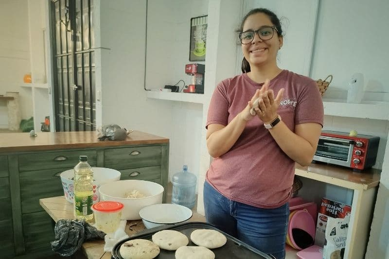

El tiempo en el Instituto Bíblico de México ha volado. No podemos creer que ya iniciamos el último año de esta etapa de intensa preparación, donde el Señor ha transformado nuestros corazones y vidas en cada paso del camino. Ha sido una verdadera aventura de estudio y crecimiento. Si quieres conocer más sobre quiénes somos y cómo comenzó esta aventura, te invitamos a leerlo.
Corazón en el Servicio y la Comunidad
Septiembre fue un mes que reforzó el valor de la comunidad y el servicio. El Señor nos permitió regresar a la iglesia Conexión Vida, donde seguimos caminando junto a los jóvenes. ¡Con gran alegría, este año también se nos ha dado el privilegio de servir a los niños! Además, estamos contentos porque este año iniciamos un nuevo grupo de aventura de estudio con otro matrimonio en el Instituto. Cada martes, nos reunimos para compartir y orar juntos por nuestras peticiones, fortaleciendo lazos en esta aventura.
Como parte de la beca que solicitamos, este año estamos apoyando al Instituto Bíblico en las áreas de Promoción y Multimedia, y también en el área de Estudio, colaborando en la Biblioteca y otras actividades clave.


Misión en Movimiento: Nuevas oportunidades
El Señor nos ha permitido estar apoyando directamente a los grupos de la Unión Misionera Estudiantil (UME). ¡Estamos muy emocionados! Es inspirador ver los viajes que están proyectados para este año académico, y cómo la fe se traduce en acción.
Además, ¡nosotros seremos parte del equipo que irá a Tamaulipas en junio de 2026! Este viaje es un gran paso de fe para llevar el evangelio a ese estado de México. Te invitamos a ser un compañero en esta misión, orando con fervor por el viaje y por la provisión del Señor para que podamos ir y compartir Su mensaje.
Agradecemos al Señor por sus vidas y por ser parte de esta misión, estudio y servicio que Él nos permite vivir en este hermoso país de México. Dios les bendiga.
Nuestra Agenda de Aventura Compartida
- Compañía y provisión para nuestras familias: Por el cuidado y las bendiciones del Señor sobre ellos.
- Sabiduría y protección: Por claridad en las decisiones diarias y la protección espiritual en nuestro caminar con propósito.
- Provisión para Tamaulipas (Junio 2026): Para que el Señor abra los caminos y provea los recursos necesarios para este importante viaje misionero.
- Salud y energía: Por nuestro bienestar físico, para seguir sirviendo y estudiando.
¡Continúa la aventura!
¿Quieres orar por nosotros o compartir algo?
Estamos aquí para escucharte. Escríbenos y cuéntanos cómo podemos orar por ti también.
Conecta con nosotros